وزارة التجارة الداخلية وضبط السوق الوطنية
مديرية التجارة وترقية الصادرات لولاية سطيف
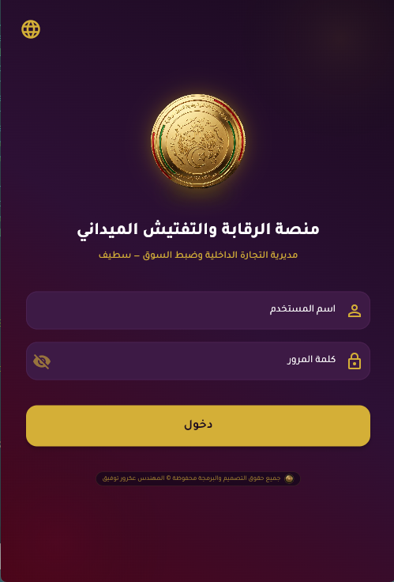
دليل الاستعمال الرسمي للمدير الولائي
منظومة الرقابة والتفتيش الميداني الذكية
الوثيقة التنفيذية المرجعية لتسيير المفتشين، متابعة الانضباط وفق الأمر 06-03، وضبط فترات التسامح وقرارات الخصم السيادية
1. الرؤية الاستراتيجية والخريطة الحية للمدير
تعرض الخريطة الحية صور الأقمار الصناعية لولاية سطيف مع مؤشرات لحظية (عدد المتواجدين في الميدان، عدد المعاينات المسجلة لليوم، وقائمة الغائبين)، مع إمكانية التنقل الفوري بين المقرات الـ 8 بضغطة زر.
تعتمد المنظومة بصمة الـ GPS الذكية عند محيط المقر والمفتشيات دون إلزام الموظفين بالتقاط صور السيلفي حماية لخصوصيتهم.
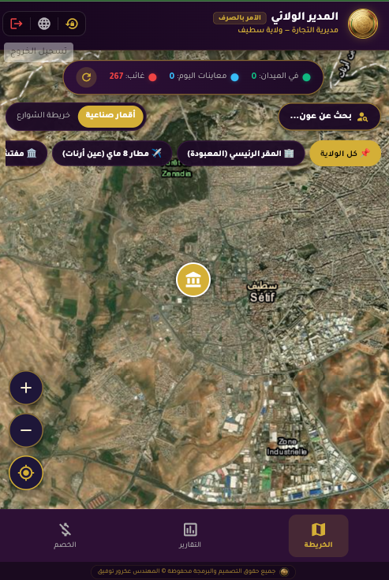
📸 لقطة حقيقية: الخريطة الحية لولاية سطيف والمقر الرئيسي ومؤشرات التفتيش2. هيكلية الصلاحيات والحسابات في المنظومة
| المستوى الوظيفي | الحساب المعتمد | الصلاحيات والمهام الإدارية الحصرية | طبيعة السلطة والقرار |
|---|---|---|---|
| المدير الولائي | directeur | الإشراف العام، الخريطة الحية لـ 267 مفتش، ضبط فترة التسامح الصباحية، والبت النهائي في الاستفسارات والخصومات. | سلطة سيادية وآمر بالصرف |
| رؤساء المصالح الثلاث |
chef_concurrence chef_consommation chef_administration |
• مصالح الرقابة: إصدار أوامر المهمة، توزيع الفرق، واعتماد المحاضر. • مصلحة الإدارة والوسائل: مراقبة أسطول السيارات (12 مركبة)، المقرات الـ 8، وتسيير المستخدمين. |
تأطير وتوجيه تقني وإداري |
| رئيس مكتب المستخدمين | bureau_user | متابعة سجل التأخرات، توجيه الاستفسارات، وتنفيذ قرارات الخصم الصادرة عن المدير فوراً على الرواتب (Exécuté sur Paie). | متابعة إدارية وتنفيذ مالي |
| المفتشون الميدانيون (267) | حسابات المفتشين الاسمية | تسجيل الحضور والانصراف بالبصمة الجغرافية، تسجيل المعاينات والمحاضر، والرد على الاستفسارات ورفع الشهادات الطبية. | تنفيذ المهام الرقابية الميدانية |
| مسؤول إدارة النظام | مدير النظام التقني | الدعم الفني، صيانة وتأمين قواعد البيانات السحابية، ومراقبة البنية التحتية والخوادم. | إدارة فنية ودعم سيبراني |
3. ميزة فترة التسامح الصباحية القابلة للضبط (Tolérance)
- 08:15 ص: انضباط شديد لفرق المناوبة الخاصة.
- 08:30 ص: توقيت مرن معتدل.
- 08:45 ص (الموصى بها): توازن مثالي بين الانضباط وتحديات النقل الصباحي.
- 09:00 ص: مرونة قصوى في فترات التقلبات الجوية.
- 09:15 ص: تسهيل خاص لظروف طارئة معتمدة.
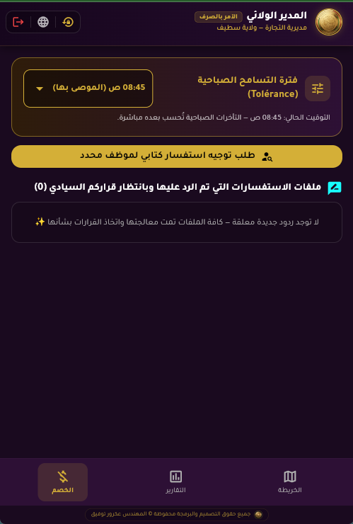
📸 لقطة حقيقية: شاشة الخصم وضبط فترة التسامح الصباحية (08:45 ص) مع طابور الردود السيادية4. تبويب التقارير اليومية وتوليد محاضر الحضور (PDF)
متابعة لحظية ومباشرة لحضور وغياب الموظفين مع إمكانية تصفح التواريخ السابقة، البحث بالاسم أو الرتبة أو رقم التسجيل، والاطلاع على مبررات الغياب والشهادات الطبية.
توليد محاضر يومية وشهرية مطبوعة جاهزة للإرسال إلى المصالح المركزية أو الوالي بضغطة زر واحدة تشمل الإحصائيات الكاملة.
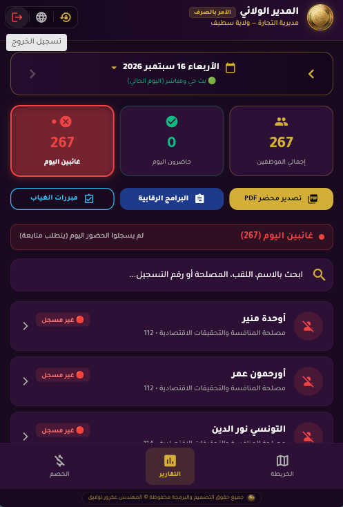
📸 لقطة حقيقية: لوحة تقارير المدير اليومية مع أزرار تصدير PDF والبرامج الرقابية ومبررات الغياب5. لوحة رئيس مصلحة المنافسة / قمع الغش وتسيير الفرق
استعراض فوري لفرق التفتيش (مثل فرقة الرقابة 01 بقيادة المفتش أُوحدة منير)، وتعديل التشكيل وتوزيع الأعضاء حسب متطلبات الميدان.
متابعة أوامر المهمة اليومية والشهرية، البرامج الولائية والقطاعية، والتأشير على المعاينات والمحاضر المسجلة من طرف الفرق.
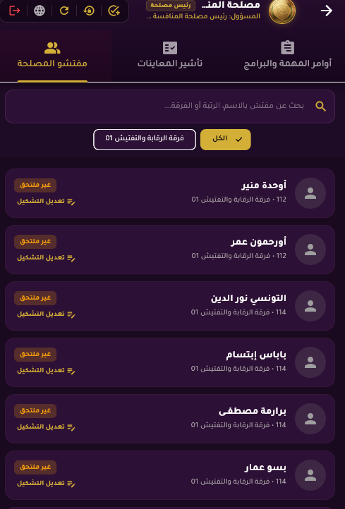
📸 تبويب مفتشي المصلحة والفرق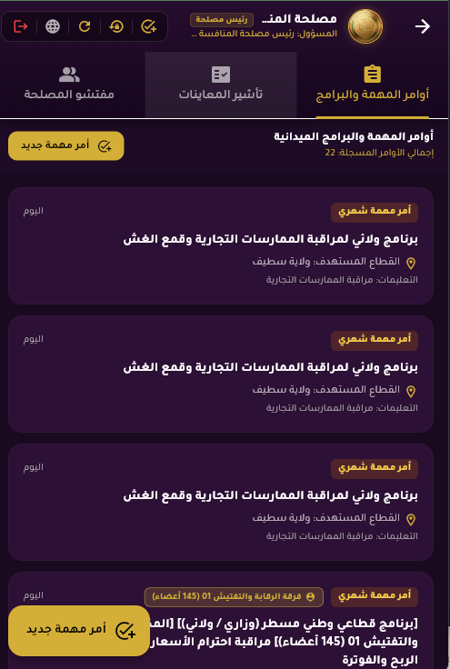
📸 سجل أوامر المهمة والبرامج6. محرك إصدار أوامر المهمة وتوجيه التدخلات الرقابية
- تكليف فرقة كاملة: توجيه فرقة رقابية محددة لاستهداف بلديات معينة.
- تعميم شامل للمصلحة: إرسال أمر المهمة بضغطة زر واحدة إلى كافة الفرق دفعة واحدة.
- تكليف مفتش فردي: إسناد مهمة معاينة نوعية لمفتش بعينه.
تحديد دقيق لمحاور التدخل (مثل: التأكد من إشهار الأسعار، فواتير التوزيع لمادتي الزيت والحليب، ومكافحة المضاربة غير المشروعة).
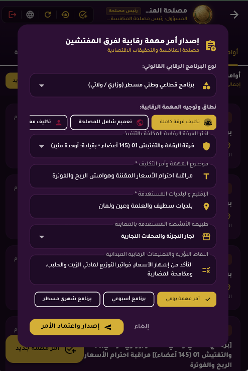
📸 تكليف فرقة كاملة بالمحاور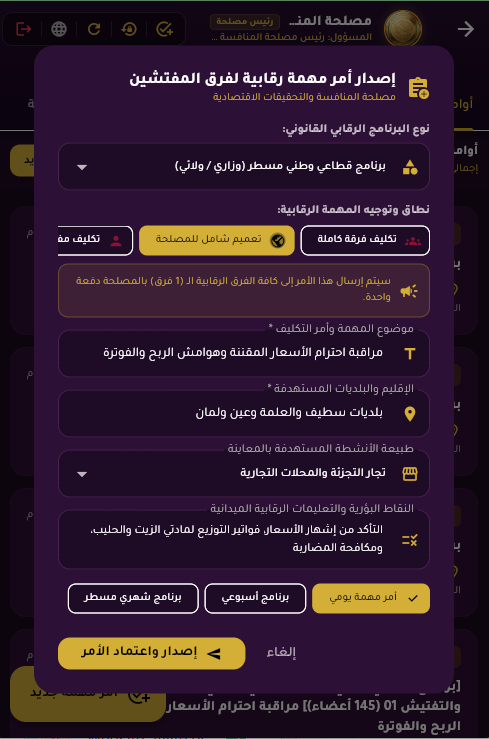
📸 تعميم شامل لكافة الفرق دفعة واحدة7. لوحة رئيس مكتب المستخدمين (الموارد البشرية والرواتب)
تعديل الوضعية (مباشر للعمل / عطلة مرضية / عطلة سنوية)، تعيين رؤساء فرق التفتيش، وتوثيق قرارات التحويل بين المصالح مع رقم وتاريخ القرار الإداري.
احتساب تراكم الساعات شهرياً وفق فترة التسامح المعتمدة من المدير (08:45 ص)، وتوجيه الاستفسارات ومتابعة ردود الأعوان خلال 48 ساعة.
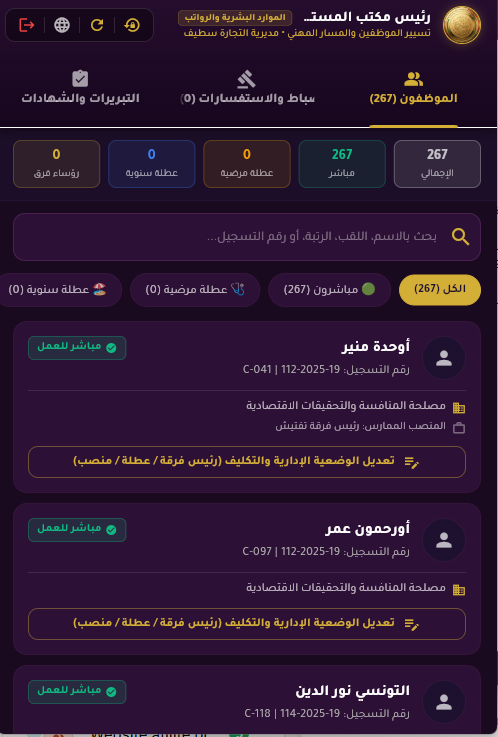
📸 الموظفون والـ KPIs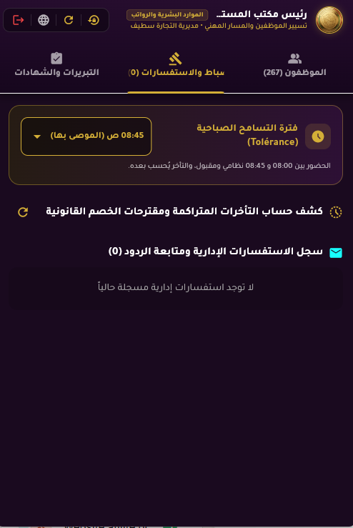
📸 الانضباط والتسامح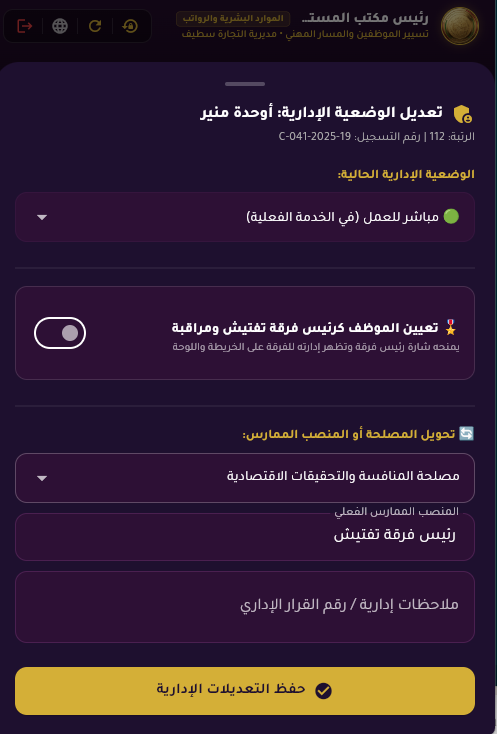
📸 تعديل الوضعية8. منظومة التوثيق الرقمي والاعتماد بالـ QR Code المشفر
توثيق رسمي للمقر الرئيسي والمفتشيات الإقليمية والملحقات بإحداثيات الـ GPS والرمز المرجعي المشفر (مثل: DCW-SETIF-HQ-#hq_setif).
إثبات حضور جغرافي رسمي معتمد للمفتش (مثل المفتش كربيع كمال) يحمل التاريخ والتوقيت والموقع والرقم المرجعي (مثل: DCW-SETIF-#277602).
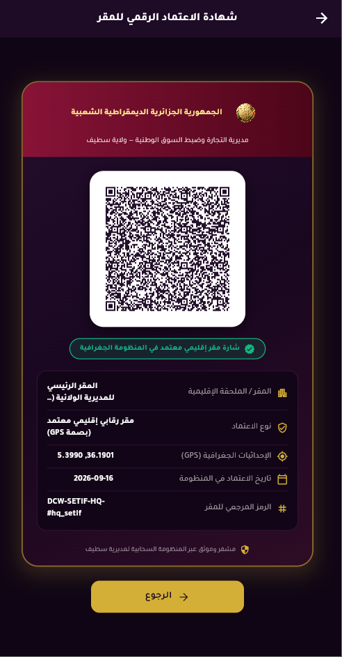
📸 شهادة الاعتماد الرقمي للمقر (المعبودة)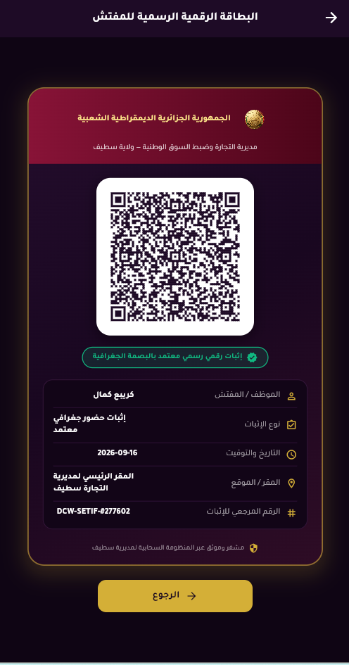
📸 البطاقة الرقمية الرسمية للمفتش مع QR Code9. شبكة المقرات الـ 8 والبصمة الجغرافية (العلمة نموذجاً)
| المقر أو المفتشية الإقليمية | الإحداثيات الجغرافية | طبيعة النشاط |
|---|---|---|
| المقر الرئيسي (حي المعبودة) | 36.1912, 5.4137 | سطيف وسط |
| مفتشية مطار 8 ماي 1945 | 36.1780, 5.3250 | مراقبة الجودة والحدود |
| المفتشية الإقليمية بالعلمة | 36.1528, 5.6908 | قطب تجاري وصناعي |
| المفتشية الإقليمية بعين ولمان | 35.9189, 5.2975 | الجهة الجنوبية |
| المفتشية الإقليمية ببوقاعة | 36.3325, 5.0886 | الجهة الشمالية الغربية |
| الملحقات (عين آزال، الكبيرة، أرنات) | دوائر متفرقة | الدوائر الكبرى |
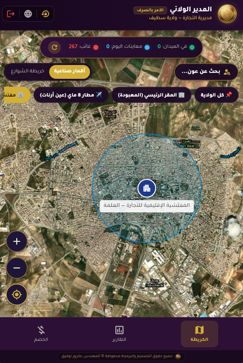
📸 لقطة حقيقية: الدائرة الجغرافية الذكية (Geofence) للمفتشية الإقليمية للتجارة بالعلمة10. لوحة التحكم المخصصة لمصلحة الإدارة والوسائل
متابعة 267 موظف، نسبة الحضور اللحظية، فلترة حسب المصالح والمقرات، وسجل تراكم التأخرات الشهرية.
تتبع أسطول سيارات المصلحة (12 مركبة)، بطاقات الوقود، سجل حقائب التفتيش وأجهزة الكشف، وجاهزية المقرات.
متابعة تنفيذ قرارات خصم المدير على كشف الرواتب، وتوليد جداول الخصم الرسمية المحالة للخزينة.
11. تطبيق الهاتف الذكي للمفتشين الميدانيين (Android)
- تسجيل الحضور والانصراف بضغطة زر: التحقق التلقائي من بصمة GPS المقر الأقرب دون الحاجة لسيلفي.
- الرد على الاستفسارات الإدارية: كتابة التبرير مباشرة ورفع الإثباتات في مهلة 48 ساعة.
- تسجيل المعاينات والمحاضر: توثيق التدخلات التجارية وحجز السلع في الميدان.
- الخط والواجهة الفاخرة: دعم كامل للغة العربية (Tajawal) والفرنسية (Plus Jakarta Sans).
- شعار ذهبي تفاعلي ثلاثي الأبعاد: دوران عملة 360 درجة هادئ ومريح كل 8 ثوانٍ.
مديرية التجارة وترقية الصادرات لولاية سطيف
خاتمة التأكيد والجاهزية للإنتاج والعرض الوزاري
تم تطوير هذه المنظومة الرقمية بأعلى معايير الأمن السيبراني والمطابقة القانونية مع قانون الوظيفة العمومية الجزائري (الأمر رقم 06-03)، وتعتبر أداة قيادة سيادية تحت الإشراف المباشر للسيد المدير الولائي لضبط النشاط الرقابي والتفتيشي عبر كامل إقليم ولاية سطيف.